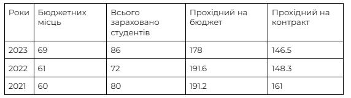

Гайд на 121#
Вступ#
Спеціальність “121 Інженерія програмного забезпечення” відкриє перед тобою безліч можливостей у світі розробки програмного забезпечення. Ти маєш можливість реалізувати свій потенціал, отримавши необхідні навички та знання у цій галузі. Кар’єра випускників може розвиватися в різних напрямках, залежно від інтересів та здібностей.
На Факультеті прикладної математики 121-у спеціальність викладають на Катедрі програмного забезпечення компʼютерних систем (ПЗКС) за освітньою програмою «Інженерія програмного забезпечення мультимедійних та інформаційно-пошукових систем».
Детальніше про те, як до нас потрапити, що і як ми вивчаємо, чим живе факультет і наша катедра, читай далі у гайді :)
Для кого ця спеціальність і ким стають наші випускники?#
На ПЗКС слід іти тим, хто хоче пов’язати своє життя з айті:
якщо ви ще не визначились з майбутнім напрямком, бажаними технологіями чи просто шукаєте себе;
якщо визначились, але хочете отримати непогану вищу освіту, поглиблено вивчити різні розділи математики, логіки.
Уже під час навчання (3-4 курси) великий відсоток студентів знаходить першу роботу/стажування за профілем. З особистого досвіду авторів цього гайду скажемо, що серед наших студентів та випускників є фул-стек розробники, фронтенд- та бекенд-розробники, гейм дизайнери, системні та бізнес аналітики в ІТ, QA та ще багато хто :)
Отже, вибір “після” доволі різноманітний і залежить від уподобань студентів та того, в якому напрямку вони побажають застосувати свої навички.
Умови вступу та прохідний бал#
Нагальне для будь-якого абітурієнта: які умови вступу, які шанси потрапити на бюджет/контракт.
Щороку прохідні бали різняться, як і кількість бюджетних місць.
Останні 3 роки показники були такими:
~ Максимальний обсяг на спеціальність - 80-100.
~ Максимальний обсяг бюджетних місць - 62-75.
Також наведемо статистику за попередні роки:

Програма спеціальності#
Освітня програма — єдиний комплекс освітніх компонентів (предметів, дисциплін, індивідуальних завдань, курсових тощо), спланованих для досягнення визначених результатів навчання.
Освітня програма на ПЗКС «Інженерія програмного забезпечення мультимедійних та інформаційно-пошукових систем» орієнтована на викладання дисциплін, що розвивають майбутніх інженерів всезагально.
Освітню програму, за якою будеш вчитися впродовж чотирьох років можеш переглянути за посиланням або якщо цікавлять лише предмети, то їх можеш переглянути у зручнішому форматі таблички.
Нумо детальніше розглянемо важливі профільні предмети, технології та задачі, що поставить перед тобою ПЗКС :)
Якщо говорити про профільні предмети: програмування, алгоритми та структури даних, бази даних тощо, більшість з них викладачі пояснюють з нуля і мають якісні напрацьовані матеріали. І загалом предметів професійного спрямування з кожним роком навчання буде більше, тож студенти встигають себе спробувати в бекенд- та фронтенд-розробці, тестуванні, бізнес-аналізі, архітектурі та адмініструванні баз даних, комп’ютерній графіці та іншому.
Впродовж навчання познайомишся з С# (активно перші два курси), Java, Python, JavaScript, HTML, CSS та ще багато чого в залежності від предметів, які обереш, та викладачів.
Предмети математичного спрямування: математичний аналіз, лінійна алгебра та аналітична геометрія, математична статистика та інші – залежать від викладача. Точно можна сказати, що вони вимагають якісної доуніверситетської підготовки. Хоча більшість викладачів намагаються донести і пояснити матеріал, треба бути готовим до викладання на відповідному рівні, може бути багато нових (хоч і не складних) термінів, позначень, але пояснювати “на яблуках” не будуть.
Про вибіркові предмети#
Також слід зауважати, що є обов’язкові до вивчення предмети і ті, які студенти можуть обрати. Список таких предметів можете також переглянути в табличці. Впродовж першого курсу це будуть лише обов’язкові предмети. На другому курсі студенти вибирають 2 предмети (усього за цей курс вивчать 18), на третьому - 8 (всього за курс - 18), на четвертому - 6 ( всього за курс - 16).
Дякуємо за увагу і сподіваємось цей гайд допоміг краще пізнати 121 спеціальність на ФПМ;)
З любов'ю, СР ФПМ
☆*: .｡. o(≧▽≦)o
Якщо залишились питання, писати сюди^_^